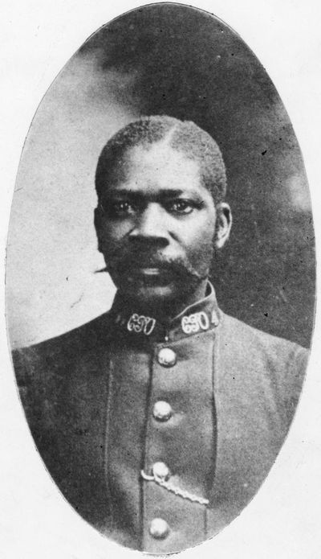
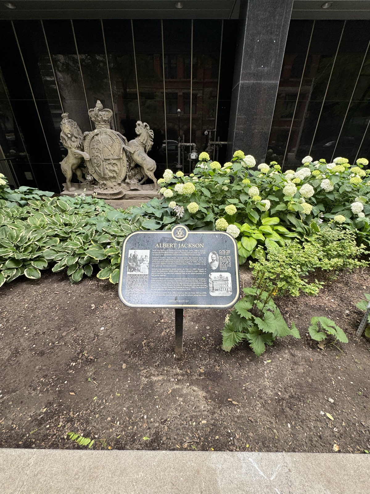
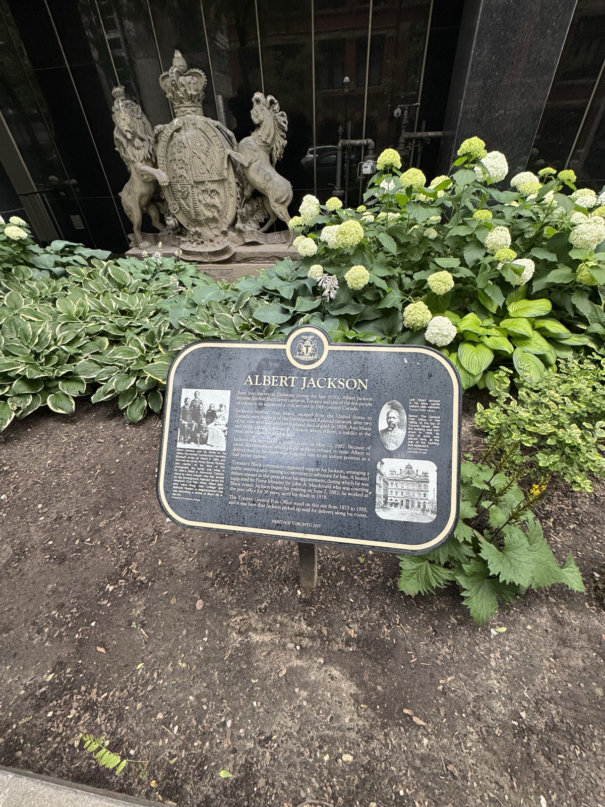

2013
Albert Jackson Lane
A laneway off Harbord Street, in the Harbord Village neighbourhood he walked for decades, was officially named Albert Jackson Lane, turning his daily route to work into a permanent place on the map.
Heritage Toronto presents
Toronto's first Black letter carrier. Born into slavery, carried north to freedom on the Underground Railroad, and returned to his route the day an entire city refused to let prejudice win.
An atlas of beginnings
Albert's story began in one place and travelled. So did every life on this globe. Spin the world, search a name, and see where each of them started.
One letter carrier. One decision. One city that answered.
In the spring of 1882, a young man in Toronto was handed a mailbag, then had it taken away because of the colour of his skin. What happened next was not quiet. Neighbours organized. Newspapers argued. A prime minister weighed in. And within weeks, Albert Jackson walked out onto his route as the first Black letter carrier in the city. This is his story, told in his own voice.
The Story
Nine chapters, from a Delaware slave cabin to a Toronto laneway that carries his name. Scroll to follow the route.
Chapter I
Albert Jackson was born into slavery in the state of Delaware in the late 1850s, the youngest child of Ann Maria Jackson. Freedom was not a birthright he was given. It was one his mother would risk everything to seize.

The road northChapter II
After two of her sons were seized and sold, and her husband died of grief, Ann Maria Jackson made her choice. With help from the Underground Railroad, she fled the United States with seven children. In 1858 they reached Toronto. Albert, still a toddler, arrived in a country where he could be free.
Chapter III
The family settled in St. John's Ward, the downtown neighbourhood that welcomed so many who had come north before the American Civil War. There Albert grew up and was educated, an ordinary Toronto boy in an extraordinary community of people who had walked out of slavery into a new life.
Chapter IV
On May 12, 1882, Albert Jackson was appointed a letter carrier for the Toronto Post Office. It was a respected civil service position, and one almost never given to a man of colour in nineteenth century Canada. The mailbag was his. For a moment.
Chapter V
His white colleagues refused to train him. Rather than teach a Black man his route, the other carriers turned their backs, and Jackson's supervisor pushed him into an indoor job as a hall porter instead. The appointment he had earned was quietly being taken away.

The city speaksChapter VI
The community would not let it stand. They organized a public meeting, formed a committee to advocate for him, and took the fight into the newspapers. A heated debate over one man's job ran across the city's press. Toronto was being asked what kind of city it wanted to be.
Chapter VII
With an election near and Black voters watching, Prime Minister Sir John A. Macdonald lent his support. The pressure worked. On June 2, 1882, Albert Jackson began his training. He would walk his route after all, the first Black letter carrier in Toronto.
Chapter VIII
In 1883 Albert married Henrietta Elizabeth Jones, and together they raised four sons. Day after day, year after year, he carried the mail through Harbord Village and the Annex. He served the Toronto Post Office for thirty-six years, until his death in 1918, a fixture of the streets he walked.

Not forgottenChapter IX
More than a century on, Toronto remembers. A Heritage Toronto plaque marks the ground where he collected his mail. A downtown laneway now bears his name. And in 2019 his face travelled the country on a Canada Post stamp. The man they tried to keep off the streets is written into them.
See how he is rememberedAn interactive conversation
Ask him about the road north, the day his route was taken away, or the city that fought to give it back. His answers are drawn from the historical record and told in his own voice.
A tribute experience. Albert's replies are written from documented history, not a recording of his words.
Legacy
The man they tried to keep off the streets is now written into the city, in bronze, in a street sign, and on a national stamp.
2013
A laneway off Harbord Street, in the Harbord Village neighbourhood he walked for decades, was officially named Albert Jackson Lane, turning his daily route to work into a permanent place on the map.
2017
Heritage Toronto placed a plaque telling his story on the ground where the old Toronto General Post Office once stood, the very site where Jackson collected the mail he carried across the city.
2019
For Black History Month, Canada Post issued a commemorative stamp portraying Albert Jackson in uniform on a Toronto street, sending his story into homes across the country.
2024
The Government of Canada designated Albert Calvin Jackson a National Historic Person, recognizing one of the first mail carriers of African descent in the country's postal service. A processing centre in Toronto also carries his name.
Born into slavery in Delaware during the late 1850s, Albert Jackson became the first Black letter carrier in Toronto and one of the few people of colour to be appointed a civil servant in 19th-century Canada.
Jackson was appointed a letter carrier on May 12, 1882. Because of racial discrimination, white workers refused to train Albert to deliver mail so his supervisor assigned him to an indoor position as a hall porter instead. Toronto's Black community organized support for Jackson, arranging a public meeting and creating a committee to advocate for him. A heated debate ensued in the press about his appointment, during which he was supported by Prime Minister Sir John A. Macdonald who was courting Black voters. Jackson began his training on June 2, 1882; he worked at the post office for 36 years, until his death in 1918.
Gallery
Photographs, illustration, and the plaque that keeps his memory in public view. Select an image to view it larger.